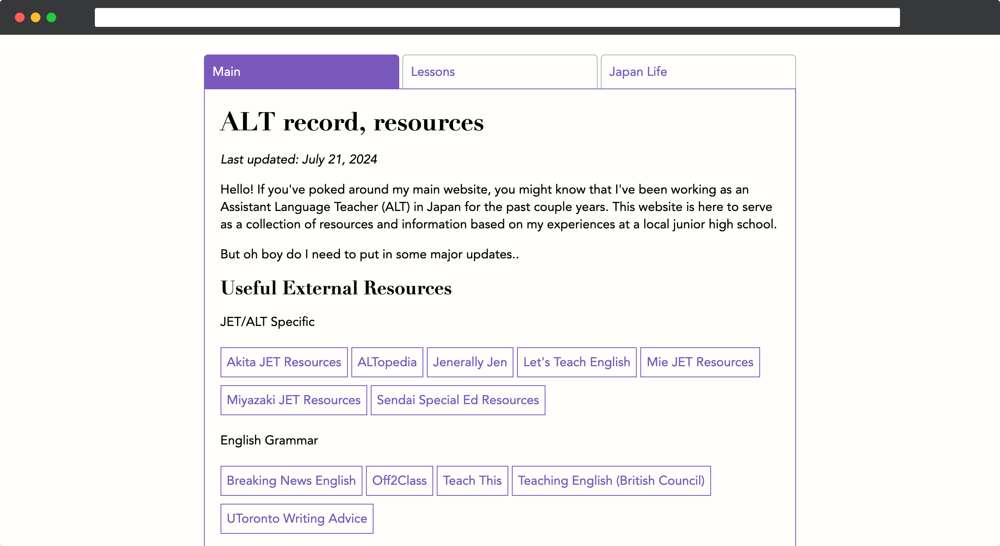
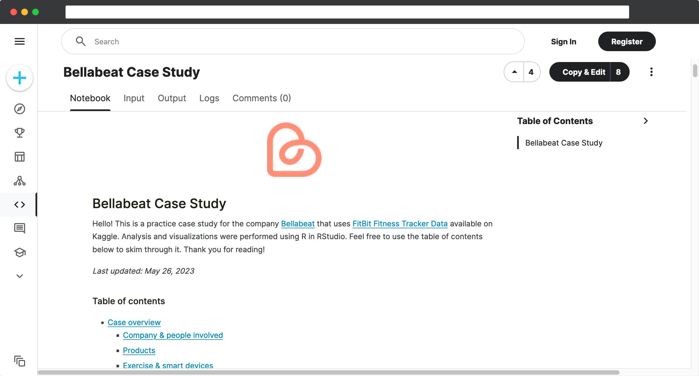
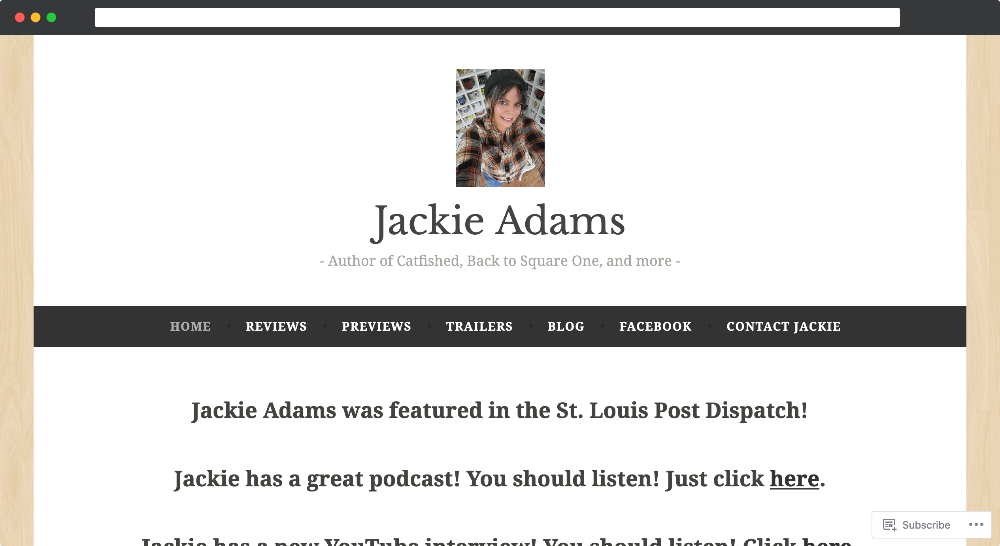
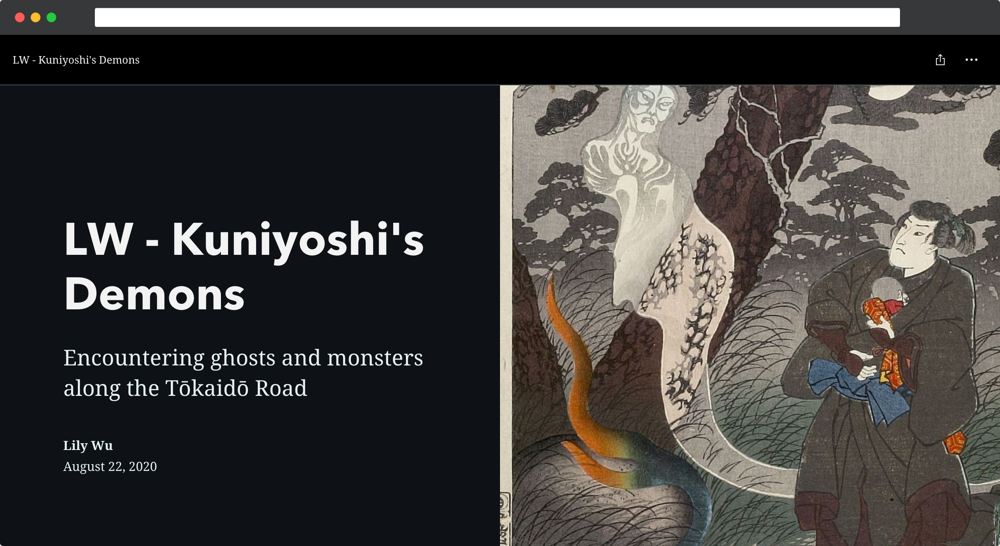
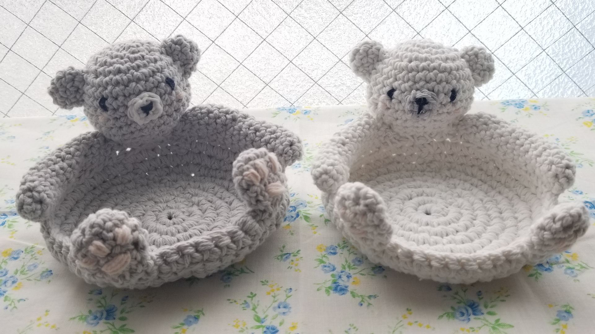

Hello! I'm Lily Wu. I'm interested in navigating interdisciplinary projects in communication and language learning. Here is a snapshot of my work.

Lily Wu
B.A., Washington University in St. Louis, May 2020
Majors: Japanese Language & Culture, Biology
Minor: Data Science in the Humanities
For the past 3 years, I've worked as an Assistant Language Teacher (ALT) with the JET Program in Sapporo, Japan. Visual and written communication have always been important to me, and I'm excited to tell stories and amplify voices in my future work!
In university, I had the opportunity to explore website design and biomedical/literary research. These experiences are reflected in my current role planning and teaching lessons with engaging slideshows, blackboard diagrams, and worksheets. I hope to continue working on these skills as well!
I love learning new languages (programming or otherwise) and skills!
Skills
- Mandarin Chinese, Japanese (JLPT N2)
- MS Office, Google Workspace, Adobe Creative Cloud
- HTML/CSS, JavaScript, Python, Java, R
- Github, Wordpress, Figma, Qualtrics
Projects
Sapporo Cafe Hop

An interactive database of cafes in Sapporo City.
Tools: Git, HTML, CSS, JS, Leaflet
ALTing
A resource and lesson plan collection for teachers of English.
Tools: Git, HTML, CSS, JS, Tabulator
Bellabeat Case Study
A capstone case study completed for the Google Data Analytics certificate.
Tools: Kaggle, R, RStudio
Jackie Adams Website
A website first created in Fall 2017, regularly updated for author Jackie Adams.
Tools: Wordpress, SEO, HTML
Kuniyoshi's Demons
A senior capstone project completed for my Japanese major, exploring the use of supernatural beings in a collection of woodblock prints.
Tools: StoryMaps, ArcGIS, Photoshop
Fiber crafts
I've been crocheting for around 14 years and have recently picked up knitting as well! In my spare time I love to create pieces for friends and family, and am (very slowly) branching into making clothes.
Credit
Favicon from https://lifeomic.github.io/chromicons.com/
My design sense has been heavily influenced by the various websites I've worked on throughout the years. I owe a lot to the mentors and peers I have had the honor of working with! Additionally, my recent JavaScript adventures are made possible by The Odin Project's thorough curriculumn.